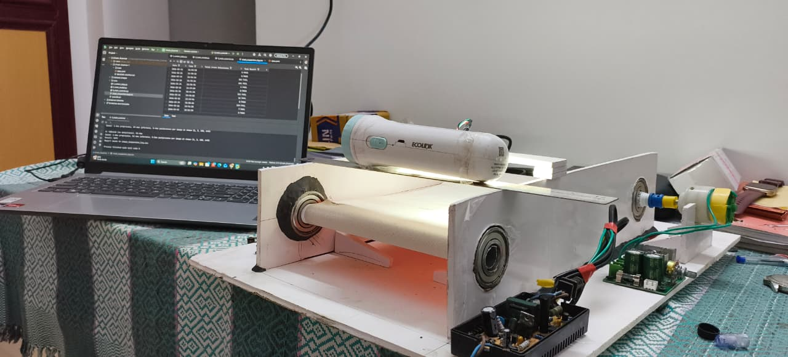

01 / Deep Learning
Automated Metal Defect Detection.
A deep learning approach using camera vision and YOLO architecture to identify manufacturing flaws in real-time. Built to optimize quality assurance in high-speed production lines.
Python
YOLOv8
OpenCV
View Case Study →